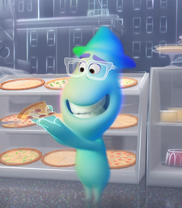
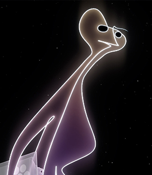
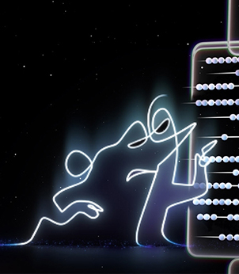

喬·賈德納（Joe Gardner）
22號
泰瑞（Terry）
傑瑞（Jerry）
主角萊莉·安德森出生於美國明尼蘇達州，在她腦中有五種情緒表現形式：快樂、憂愁、厭惡、恐懼和憤怒，這五種擬人化的情緒在萊莉的大腦總部中透過一個控制台影響萊莉的行為和記憶。而記憶被儲存在彩色水晶球內，其中最重要的五顆快樂核心記憶存放在總部樞紐，各維持著一座塑造萊莉性格的個性島嶼。
窮途末路的皮爾斯釋出X-24，剛想趁他跟羅根與蘿拉惡戰時開車逃跑，但變種小孩集體用各自的能力將皮爾斯殺死並活埋。當羅根被重傷後，蘿拉拿槍發射出羅根隨身多年的的亞德曼金屬製子彈才殺死X-24。臨死前的羅根在蘿拉陪伴下，首次體驗到家人陪伴以及做父親的感覺後安詳離世，結束他悲壯漫長的一生。最後，蘿拉和夥伴們將羅根埋葬在湖邊，蘿拉引用電影《原野奇俠》裡的對白作為悼念詞後，大家便繼續上路穿越邊境。對父親戀戀不捨的蘿拉，走前將羅根墓前的十字架放置成X狀，藉此永遠紀念她的父親，並是最後一位X戰警。
卡爾想盡快抵達「仙境瀑布」，完成艾莉的心願，但凱文因救大家腳被咬傷，小羅覺得應該先帶凱文回她孩子身邊，卡爾猶豫下終究妥協先帶凱文。小逗身上的追蹤器，讓查理斯很快地找到他們，且放火燒掉卡爾的房子，卡爾情急之下選擇滅火，導致凱文被查理斯捉走。心愛的房子被燒，卡爾不顧與小羅的承諾救出凱文，執著前往仙境瀑布。抵達後，卡爾靜下來翻閱艾莉的冒險日記，才明瞭艾莉與他已走過一生的冒險，是時候開始他另一個新的旅程。
《大英雄天團》改編自漫威於1998年出版的同名漫畫。故事發生在一個虛構的未來混合大都市「舊京山」，14歲發明天才少年濱田廣的最新發明「微型機器人」，竟然令他捲入足以摧毀舊京山的巨大陰謀！孤立無援，阿廣只能藉助一班另類勢力，由宅宅實驗室裡四個哥哥的朋友包括芥末無薑、化學天才哈妮蕾夢、單車信差神行蛋葆、宅男漫畫迷費吉拉及醫護機器人杯麵。阿廣為朋友和自己配上了高科技超級裝備，6人組成了能力非凡的「大英雄天團」。阿廣在同為發明家的哥哥濱田正去世之後，與哥哥生前發明的醫療用機器人－杯麵成了好朋友。然而，他發現哥哥當時的死因並不單純，為了阻止黑暗勢力，阿廣與機器人杯麵，連同幾位富有正義感的夥伴們組成聯盟，阿廣也運用了他的科技頭腦，為團員們設計一系列的武器配備，共同伸張正義。